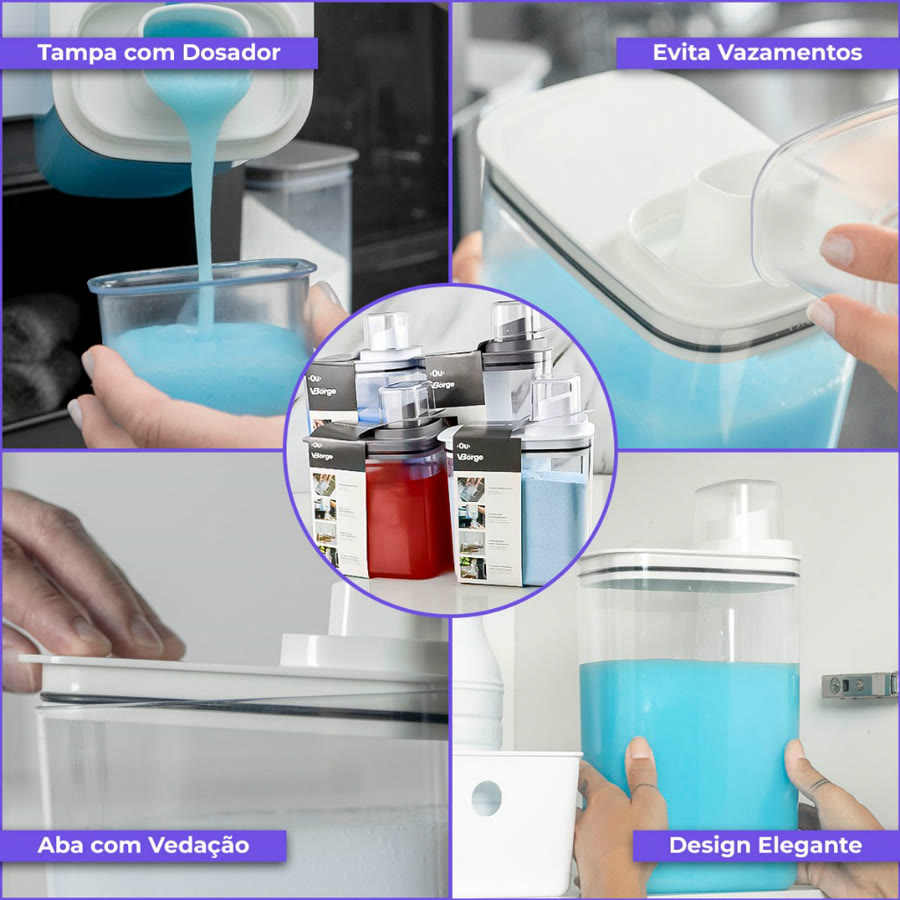
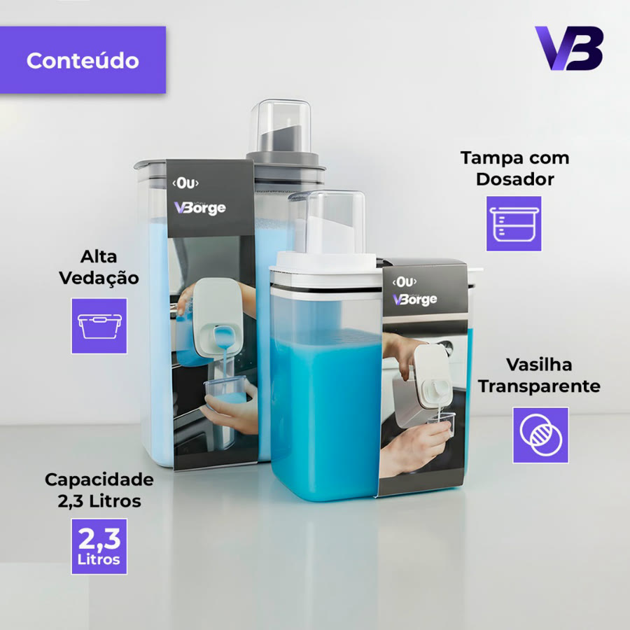
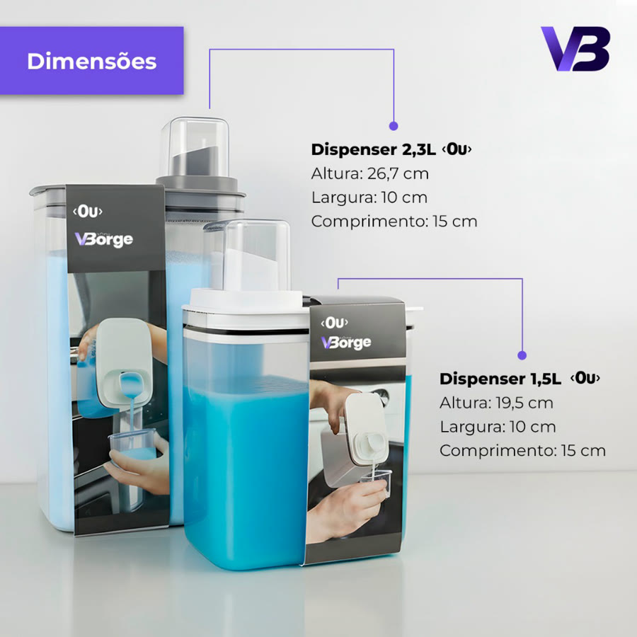
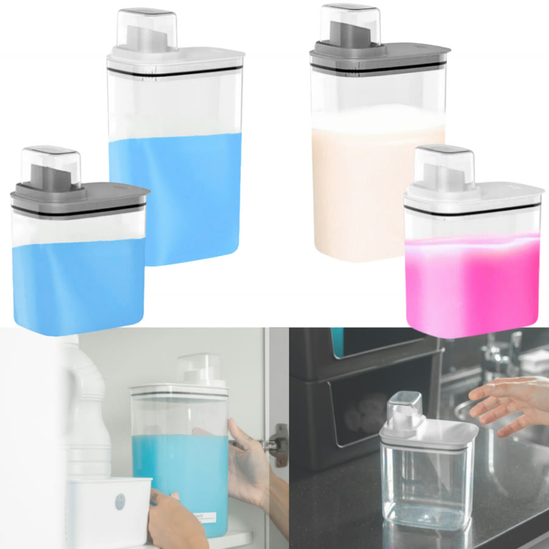
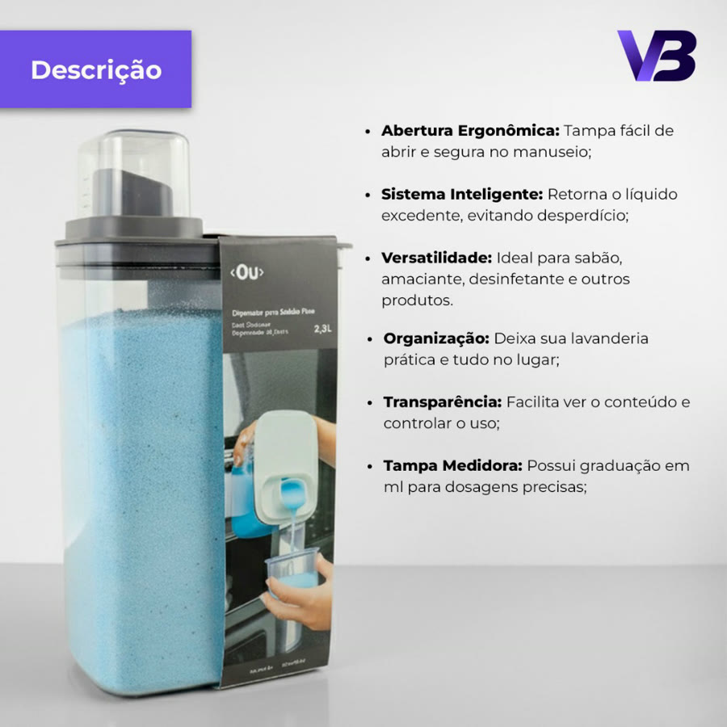

Achado nº 124
Galão de amaciante pingando na prateleira?
Dispensers transparentes para sabão e amaciante (1,5 L e 2,3 L)
★ 4,8 · mais de 7 mil avaliações na Shopee






O que diz a página oficial do produto
- São potes transparentes com tampa medidora, para guardar amaciante, sabão em pó, desinfetante e outros produtos de limpeza
- A tampa tem marcação em mililitros e uma aba para abrir
- Segundo o anúncio, a tampa tem um sistema que devolve para dentro o líquido que sobra
- Tem anel de vedação para manter fechado
- O de 2,3 L mede 26,7 cm de altura e o de 1,5 L, 19,5 cm; os dois têm 10 por 15 cm de base
- Vende avulso ou em kit, em branco ou cinza
- Segundo o anúncio, é livre de BPA; não pode ir à lava-louças
- Na Shopee, tem nota 4,8 com mais de 7 mil avaliações
Link de afiliado: se você comprar por ele, a Achadaria pode receber uma comissão, sem custo extra para você. Preço, estoque e entrega são da loja e podem mudar; confira lá antes de comprar.